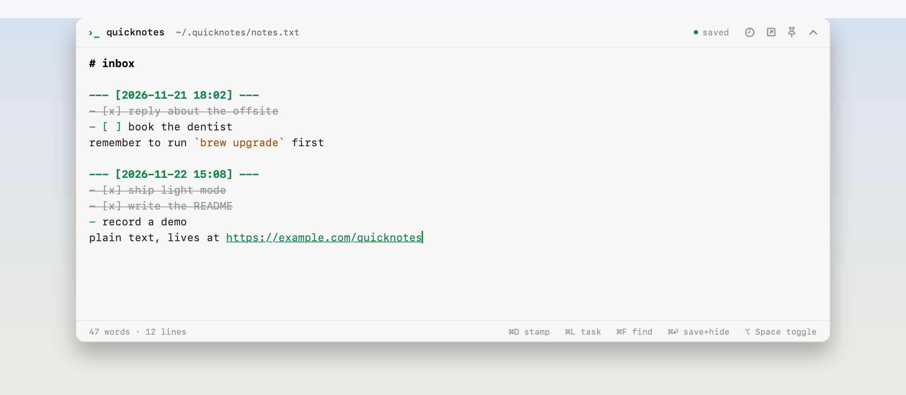

Press
A notepad slides down from under the menu bar, over whatever you're doing. Write the thought down, press esc, carry on. Go on, it works on this page.

It's just a text file.
No database, no account, no sync service. Read it with cat, add to it with echo, keep it in git or Dropbox.
When another program changes the file, the visor picks it up live, even mid-sentence. Try it.
Open, write, gone.
A timestamp with ⌘D, a list that continues itself, a couple of tasks ticked off with ⌘L, and back to work.
Hands stay on the keys.
Notes stay plain text, but headings, timestamps, lists, checkboxes, code and links are styled as you type.
Show or hide. From any app, any desktop. Four other hotkeys to choose from.
Hide. Clicking elsewhere hides it too, unless it's pinned.
Timestamp. --- [2026-11-22 09:30] ---
Checkbox. idea → - [ ] idea → - [x] idea
Lists continue. - * 1. - [ ] >, and an empty item ends the list.
Indent and outdent, one line or many.
Find, with ⌘G and ⇧⌘G for next and previous.
Open the file in your usual text editor.
Careful with your words.
It saves continuously.
0.4 seconds after you stop typing, at least every 3 seconds while you keep going, and whenever you hide it, quit, or the Mac sleeps.
Adding text only appends.
Only the new text is written, so
tail -fkeeps working. Every other edit goes to a temporary file that's swapped in, so a crash never leaves half a file.Conflicts never lose anything.
If another program rewrites the file before your typing is saved, your version stays and theirs is backed up to
~/.awning/conflicts/.It won't damage what it can't read.
A file that isn't valid UTF-8 opens read-only instead of being overwritten.
Symlinks stay symlinks.
Point
~/.awninginto iCloud Drive, Dropbox or a git repository and it stays a link.
Build it in a minute.
You need macOS 13 or later and Xcode 15 or later (or the matching Swift toolchain).